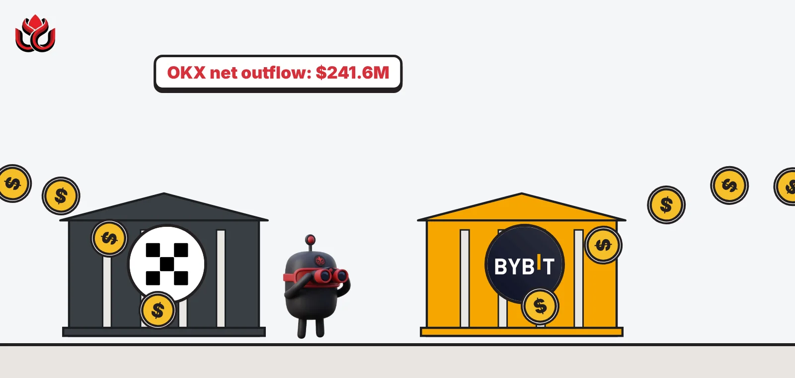
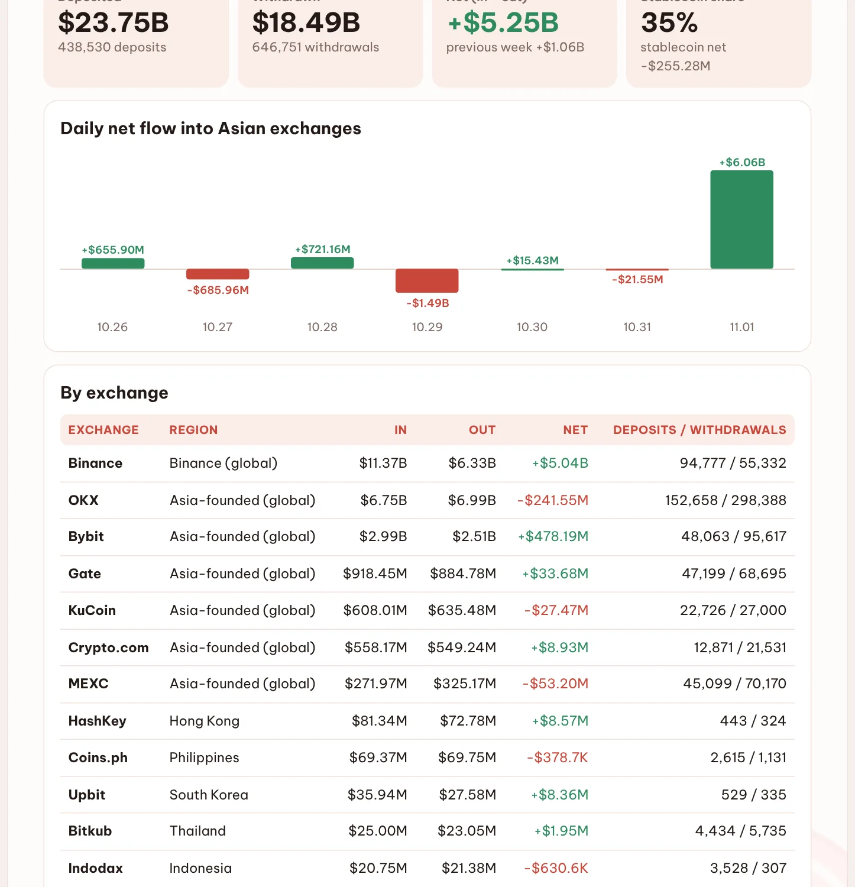
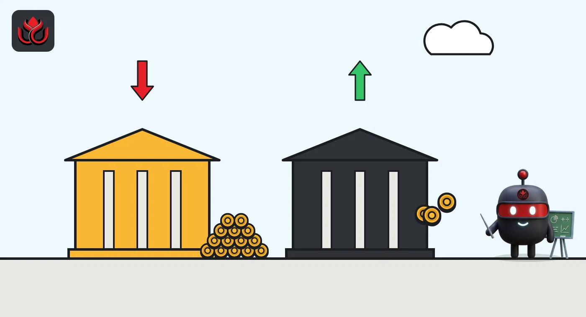

OKX logged three times Binance's transfer count last week and lost a net $241.6 million
DeepSea's exchange data shows 451,046 transfers at OKX from October 26 to November 1, with almost twice as many withdrawals as deposits. Bybit went the other way, with a net $478.2 million coming in.

Key points
- OKX processed 152,658 deposits and 298,388 withdrawals from October 26 to November 1, more transfers than any other Asian exchange DeepSea tracks.
- More money left OKX than arrived: $6.99 billion out against $6.75 billion in, a net minus $241.55 million.
- Bybit took in a net +$478.19 million. MEXC (minus $53.20 million) and KuCoin (minus $27.47 million) also saw net outflows.
 What DeepSea's data shows
What DeepSea's data shows
DeepSea's weekly report counts every deposit to and withdrawal from labeled exchange wallets for the week of October 26 to November 1, 2026. Asian exchanges as a group took in a net +$5.25 billion, almost all of it at Binance (+$5.04 billion).
OKX was the biggest exception. It saw $6.75 billion in and $6.99 billion out, a net minus $241.55 million, spread over 152,658 deposits and 298,388 withdrawals. That is 451,046 transfers in total. Binance, with far more money moving, logged 150,109 (94,777 deposits and 55,332 withdrawals).

Data: DeepSea (desea.io), checked November 4, 2026, 6:40 a.m. ET.
Many small withdrawals
Divide the dollars by the counts and a pattern shows. The average OKX deposit was about $44,200 and the average withdrawal about $23,400. At Binance, the average deposit was about $120,000. In plain terms, OKX handled a large number of smaller withdrawals, while Binance drew fewer but much larger deposits.
In bitcoin, OKX lost a net 986 BTC (30,115 in, 31,101 out). The OKX figures also include large stablecoin transfers, including one $179.36 million USDT withdrawal on Ethereum at 4:49 p.m. ET on October 26.
The other Asia-founded exchanges
Bybit had a net inflow of +$478.19 million ($2.99 billion in, $2.51 billion out), even though it, too, logged about twice as many withdrawals (95,617) as deposits (48,063). Gate (+$33.68 million) and Crypto.com (+$8.93 million) also gained. MEXC lost a net $53.20 million and KuCoin a net $27.47 million.
Net flow by exchange, Asia-founded global exchanges
US$ million
October 26 to November 1, 2026. Binance (+$5.04B) left out for scale. Source: DeepSea weekly report.

Why it matters
Money leaving an exchange often goes to private wallets, other exchanges or DeFi apps. Money arriving is often parked to trade or sell. A net outflow of $241.55 million is about 3.6% of OKX's weekly deposits. DeepSea's data shows where money moved, not who moved it or why.
LC Insight analysis
This section is our reading of the facts above, not a statement of fact.
- We think OKX's transfer count says more than its net figure: a very high number of withdrawals points to broad retail activity rather than one big player leaving.
- Bybit and OKX both had about two withdrawals for every deposit, yet ended on opposite sides. The difference likely came from a smaller number of large deposits at Bybit.
- One week of outflows is not a verdict on any exchange. If OKX stays negative for several weeks, that would be a clearer signal.
What's next
- Whether OKX's net outflow continues in next week's DeepSea report
- Bybit's bitcoin inflows, a net 5,255 BTC this week
- MEXC and KuCoin flows
Disclaimer. This article is based on public information and the sources listed below as of the update time shown. It is for information only and is not investment, legal or tax advice. Figures may change as companies and authorities publish new data.